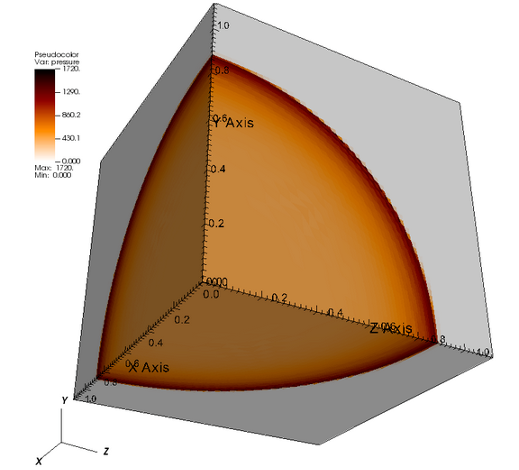

Cinema Code, Specifications, and Downloads
Cinema Code
The main Cinema project Github code repository contains code for viewers and writers, official specifications, example data sets, and submodules for all Cinema released code. Basic viewers can be expanded with cinema_components and the submodules provide working examples for users with specialized analysis needs.
Cinema Specifications
The official Cinema specifications define a CSV-based database specification. These can be found in the following document: Dietrich -- Spec D
Cinema Viewer Applications
These are the basic (currently supported) viewers. Examples can be seen on the Examples page.
-
Cinema:Scope -- a Qt based crossplatform viewer that uses either UI sliders or intuitive mouse movements for interactive exploration of data abstracts. Cinema:Scope uses Travis CI for its builds. Cinema:Scope is supported on Linux, MacOS, MacOS/Xcode and Windows. Download the executables:
Executables: MacOS, Windows, Linux
-
Cinema:Explorer -- the browser-based parallel components viewer using a CSV file to define the database. The parallel coordinates plot allows the user to select and threshold data, promoting interaction with the entire Cinema database and parameter space. In addition to the parallel coordinates plot, this basic viewer includes an image spread and a scatterplot. Clone the git repo to start using Cinema:Explorer.
-
Cinema:Compare -- the browser-based interactive viewer allows the user to access the image artifacts in a (CSV-defined) Cinema database via UI sliders linked to the database parameters. It can be used with a single Cinema database to explore the data interactively. Or it can be used with multiple databases to compare and contrast, e.g., different run parameters or the effect of different algorithms applied to the data. Clone the git repo to start using Cinema:Compare.
-
cinema_components -- a JavaScript/D3-based library of Spec D compliant components for building browser-based viewers.
Cinema Algorithms
- cinema_lib -- a python-based command line tool; it includes associated modules that implement various algorithms (statistical algorithms, image-based algorithms, etc.) that can be run on Cinema databases.
Example Databases
These are sample Cinema databases (CDB) that can be used to explore Cinema functionality. Each Spec D CDB includes the control file data.csv. Images for each database are organized into the necessary subdirectories under image/*.

Spec D Sphere: this simple database has 1 theta and 20 phi values. Download from Github (it is also included in the cinema_explorer download):

Spec D Sedov Blast Wave: three example databases are available, each with 7 theta, 7 phi values and 10 time steps. Part of the cinema_compare download:
Deprecated Applications and Code
These codes are for applications used by earlier specifications and are no longer supported.
- Desktop Viewer (Spec A & C) Version 1.0:
- Desktop Viewer (Spec A & C) Version 0.9:
- Cinema CVLIB A Web-based Spec A viewer.